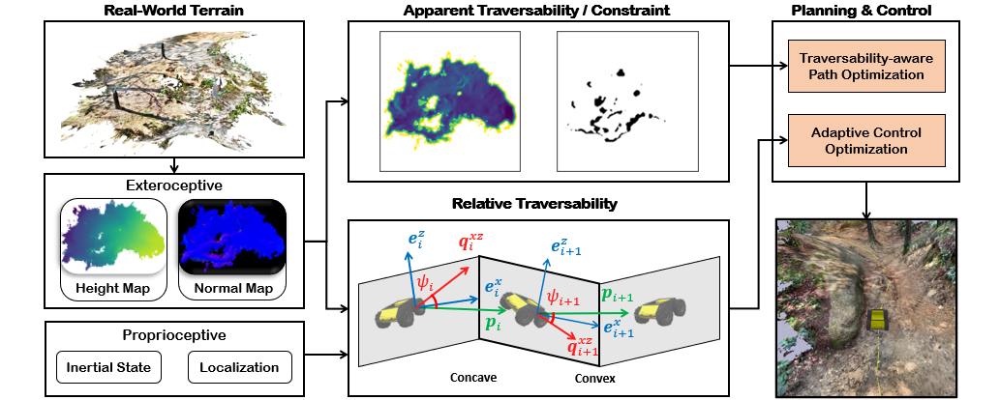
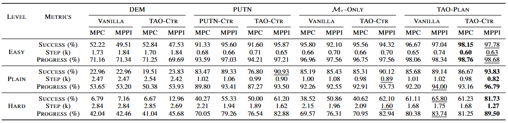
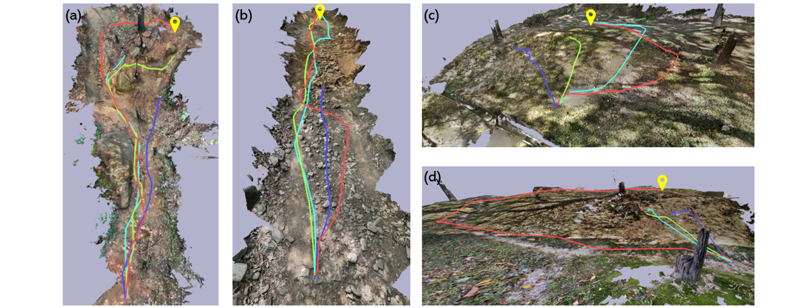

Traversability-Aware Adaptive Optimization for
Path Planning and Control in Mountainous Terrain
Seoul National University
*Equal contribution · †Corresponding author
TL;DR TAO separates traversability into an apparent component (how hard the terrain looks) and a relative component (how hard it is given the robot's own speed and torque), and injects both into sampling-based path planning and motion predictive control — letting a robot move resiliently through extreme mountainous terrain without getting stuck.

Abstract
Autonomous navigation in extreme mountainous terrains poses challenges due to the presence of mobility-stressing elements and undulating surfaces, making it particularly difficult compared to conventional off-road driving scenarios. In such environments, estimating traversability solely based on exteroceptive sensors often leads to the inability to reach the goal due to a high prevalence of non-traversable areas. In this letter, we consider traversability as a relative value that integrates the robot's internal state, such as speed and torque, to exhibit resilient behavior to reach its goal successfully.
We separate traversability into apparent traversability and relative traversability, then incorporate these distinctions in the optimization process of sampling-based path planning and motion predictive control. Our method enables the robots to execute the desired behaviors more accurately while avoiding hazardous regions and getting stuck. Experiments conducted on simulation with 27 diverse types of mountainous terrain and real-world demonstrate the robustness of the proposed framework, with increasingly better performance observed in more complex environments.
Key Ideas
- Traversability as a relative value. Beyond how the terrain looks, TAO treats traversability as relative to the robot's internal state (speed, torque) — a slope that is impassable at low speed may be traversable with enough momentum, and vice versa.
- Apparent vs. relative traversability. TAO decomposes traversability into an apparent component from exteroceptive sensing and a relative component from proprioceptive state, so planning and control can reason about both terrain difficulty and the robot's current capability.
- Traversability-aware optimization. Both components are folded into the cost of sampling-based path planning and motion predictive control, biasing behavior toward safe, achievable motions while adapting velocity in risky regions.
- Robust as terrain gets harder. Validated on 27 simulated mountainous terrains and in the real world, with the performance gap over baselines growing as environments become more complex.
Method
TAO estimates apparent traversability from exteroceptive terrain perception and relative traversability from the robot's proprioceptive state, where the internal speed and torque act as a tracking coefficient that dynamically adjusts how aggressively the robot should move. Rather than assigning a fixed speed profile to a discrete terrain class, this keeps the cost continuous and motion-aware.
Both traversability terms are incorporated into the optimization of a sampling-based path planner and a motion predictive controller, together with constraints that prevent the robot from overlooking potential risk in hazardous terrain. The result is a planner-controller stack that follows desired behaviors accurately while avoiding regions where the robot would stall or get stuck.

TAO framework. From real-world terrain, exteroceptive sensing (height and normal maps) produces apparent traversability and hard constraints, while the robot's proprioceptive state (inertial state and localization) produces relative traversability. Both feed planning & control — traversability-aware path optimization and adaptive control optimization — to drive the robot toward the goal.
Results
TAO is evaluated in simulation across 27 diverse mountainous terrains reconstructed from real landscapes, and deployed on a physical robot in real mountainous environments. Across settings TAO reaches goals more reliably and avoids getting stuck, and the improvement over baselines grows as the terrain becomes more complex.
Simulation
Against terrain-mapping and planning baselines (DEM, PUTN, and a traversability-map-only variant), adding TAO's planning (TAO-Plan) and adaptive control (TAO-Ctr) improves success rate and goal progress while reducing path steps. The margin is small on Easy terrain but widens sharply on Hard terrain, where naive controllers frequently stall.

Table 1. Simulation results by difficulty (Easy / Plain / Hard) across planning baselines (DEM, PUTN, ℳτ-only, TAO-Plan), each combined with vanilla vs. TAO-Ctr control under MPC and MPPI. Best per row in bold, second best underlined.

Simulated rollouts on reconstructed terrain. (a)–(d) trajectories on 3D terrains reconstructed from real mountainous landscapes; TAO follows safer, more consistent paths to the goal (pin) across steep, rugged surfaces.
Real-world
Deployed on a physical robot in real mountainous terrain, TAO reliably reaches the goal, while the PUTN baseline repeatedly gets stuck short of it.

Real-world navigation. From Start to Goal in real mountainous terrain, three runs each of PUTN (blue) and TAO (red). TAO consistently finds a traversable route to the goal, whereas PUTN stalls near the start.
BibTeX
@article{yoo2024traversability,
title={Traversability-Aware Adaptive Optimization for Path Planning and Control in Mountainous Terrain},
author={Yoo, Se-Wook and Son, E-In and Seo, Seung-Woo},
journal={IEEE Robotics and Automation Letters},
volume={9},
number={6},
pages={5078--5085},
year={2024},
publisher={IEEE}
}